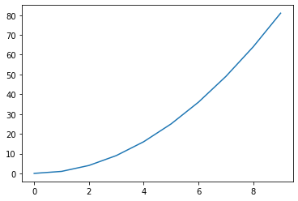
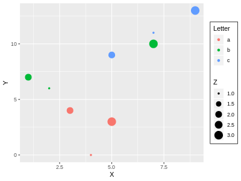

This is a test post for formatting Jupyter Notebooks for Hugo. This workflow makes use of the code at repository nb2hugo, as well as the beakerx jupyter kernel.
This is will test blog is a complicated workflow. Begin by running the newest version of JupyterLab. Run through the basic markdown sections. Next, try working with the R kernel by using rpy2 library. Run these cells to ensure functionality.
Then close the notebook and re-open it in Beakerx with the beakerx Groovy kernel. This will ensure that the beakerx object is available for autotranslation. Try the autotranslated cells.
Finally, change the kernel back to Python and finish running the notebook.
Basic Section Headers
Subsection header
Cupiditate voluptas sunt velit. Accusantium aliquid expedita excepturi quis laborum autem. Quas occaecati et atque est repellat dolores. Laudantium in molestiae consequatur voluptate ipsa. Nulla quia non qui sed. Voluptatem et enim nesciunt sunt pariatur. Libero eius excepturi voluptatibus reprehenderit. Facere enim neque dolorem sed ullam non. Dolor sit molestias repellendus.
Example of one output
print('goodbye!')
goodbye!
Example of multiple outputs
print('hello')
print('world')
print('goodbye!')
hello
world
goodbye!
Subsection header
Cupiditate voluptas sunt velit. Accusantium aliquid expedita excepturi quis laborum autem. Quas occaecati et atque est repellat dolores. Laudantium in molestiae consequatur voluptate ipsa. Nulla quia non qui sed. Voluptatem et enim nesciunt sunt pariatur. Libero eius excepturi voluptatibus reprehenderit. Facere enim neque dolorem sed ullam non. Dolor sit molestias repellendus.
This is a footnote as performed with text:[^1], which follows as.1
The bottom of the page can be marked with the following:
[^1]: the footnote text.
Scroll to the bottom to see the result.
Formatting Requirements
Markdown section
The post must conform to the following:
- notebook-filename_must_be_lowercase.ipynb
- apply metadata formatting
# Formatting for Jupyter (.ipynb) Notebooks
Date: 2019-05-08
Author: Jason Beach
Categories: Blog, Category
Tags: jupyter, tag
<!--eofm-->
- notebook-name_must_be_lowercase.ipynb
#Title As Above (.ipynb) or part of metadata (.md)## All Second Sections (to ensure proper smartToc)### All third sections- use opening paragraph beneath metadata
- ensure either output, or markdown cell, between code cells
- reference other posts with absolute url:
[my post]( https://imtorgdemo.github.io/posts/blog_page-todo/#List-of-Future-Posts) - add external references to documentation
[ref](http://domain.com)
Latex section
This is inline latex \(x_i^2\)
The display mode notation \\[c = \\sqrt{a^2 + b^2}\\] becomes:
\[c = \sqrt{a^2 + b^2}\]
This is a latex code block using %%latex cell magic
%%latex \begin{aligned} \nabla \times \vec{\mathbf{B}} -, \frac1c, \frac{\partial\vec{\mathbf{E}}}{\partial t} & = \frac{4\pi}{c}\vec{\mathbf{j}} \ \nabla \cdot \vec{\mathbf{E}} & = 4 \pi \rho \ \nabla \times \vec{\mathbf{E}}, +, \frac1c, \frac{\partial\vec{\mathbf{B}}}{\partial t} & = \vec{\mathbf{0}} \ \nabla \cdot \vec{\mathbf{B}} & = 0 \end{aligned}
Graphic section
import matplotlib.pyplot as plt
import numpy as np
a=[x for x in range(10)]
b=np.square(a)
plt.plot(a,b)
plt.show()

Dataframes and tables
import pandas as pd
d = {'col1': [1,2,3,4,5,6,7], 'col2': [1,2,3,4,5,6,7]}
df = pd.DataFrame(data=d)
df.head()
| col1 | col2 | |
|---|---|---|
| 0 | 1 | 1 |
| 1 | 2 | 2 |
| 2 | 3 | 3 |
| 3 | 4 | 4 |
| 4 | 5 | 5 |
Additional Language Kernels
Python
The code above is written in python. Now, lets try R statistical language.
R language
%load_ext rpy2.ipython
The rpy2.ipython extension is already loaded. To reload it, use:
%reload_ext rpy2.ipython
%R require(ggplot2)
array([1], dtype=int32)
import pandas as pd
df = pd.DataFrame({
'Letter': ['a', 'a', 'a', 'b', 'b', 'b', 'c', 'c', 'c'],
'X': [4, 3, 5, 2, 1, 7, 7, 5, 9],
'Y': [0, 4, 3, 6, 7, 10, 11, 9, 13],
'Z': [1, 2, 3, 1, 2, 3, 1, 2, 3]
})
%%R -i df
head(df, 3)
Letter X Y Z
0 a 4 0 1
1 a 3 4 2
2 a 5 3 3
%%R -i df -w 400 -h 300
options(repr.plot.width = 1, repr.plot.height = 0.75)
thm <- theme(
#panel.background = element_rect(fill = "transparent"), # bg of the panel
plot.background = element_rect(fill = "transparent", color = NA), # bg of the plot
#panel.grid.major = element_blank(), # get rid of major grid
#panel.grid.minor = element_blank(), # get rid of minor grid
legend.background = element_rect(fill = "transparent"), # get rid of legend bg
legend.box.background = element_rect(fill = "transparent") # get rid of legend panel bg
)
p <- ggplot(data = df) + geom_point(aes(x = X, y= Y, color = Letter, size = Z))
p + thm

Groovy
Now, the kernel is changed to Groovy to introduce autotranslation. Autotranslation is only available in beakerx with the Groovy kernel.
beakerx.foo = "a groovy value"
a groovy value
Javascript
Now, we use javascript.
%%javascript
beakerx.bar = [23, 48, 7, beakerx.foo];
beakerx.foo
Back to python
%%python
from beakerx import beakerx
beakerx.bar
[23, 48, 7, 'a groovy value']
HTML
The below is written in HTML and is used for rendering within the notebook.
%%html
<style>
.node {
background-color: lightblue;
}
</style>
<div class="node"> Hello World </div>
Use the <script> tag to write safe, non-rendering HTML that still allows for correct syntax highlighting.
%%html
<script type="application/text">
<style>
.node {
background-color: lightblue;
}
</style>
<div class="node"> Hello World </div>
</script>
When you use nbconvert to change to markdown, you will receive the following error. However, the output will be correct.
%%output
writer.convert(notebook, site_dir, section)
/usr/local/lib/python3.7/site-packages/nbconvert-5.5.0-py3.7.egg/nbconvert/filters/datatypefilter.
py:41: UserWarning: Your element with mimetype(s) dict_keys(['application/javascript']) is not able to be represented.
mimetypes=output.keys())
Created 'posts/blog_test-hugo_blog.md'
Back to python
Now, manually change the kernel back to python.
print('back to python')
back to python
Final Section
Cupiditate voluptas sunt velit. Accusantium aliquid expedita excepturi quis laborum autem. Quas occaecati et atque est repellat dolores. Laudantium in molestiae consequatur voluptate ipsa. Nulla quia non qui sed. Voluptatem et enim nesciunt sunt pariatur. Libero eius excepturi voluptatibus reprehenderit. Facere enim neque dolorem sed ullam non. Dolor sit molestias repellendus.
References
-
the reference goes here. ↩︎